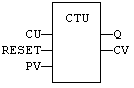
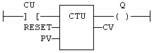

Function Block
Count up.
|
Name |
Type |
Description |
|
CU |
BOOL |
Enables counting. Counter is increased on each call when CU is TRUE. |
|
RESET |
BOOL |
Resets command. Counter is reset to 0 when called with RESET to TRUE. |
|
PV |
DINT |
Programmed maximum value. |
|
Name |
Type |
Description |
|
Q |
BOOL |
TRUE when counter is full, i.e. when CV = PV. |
|
CV |
DINT |
Current value of the counter. |
The counter is empty (CV = 0) when the application starts. The counter does not include a pulse detection for CU input. Use R_TRIG or F_TRIG function block for counting pulses of CU input signal. In LD language, CU is the input rung. The output rung is the Q output.
CTUr, CTDr, CTUDr function blocks operate exactly as other counters, except that all boolean inputs (CU, CD, RESET, LOAD) have an implicit rising edge detection included. Not that these counters may be not supported on some target systems.
MyCounter is a declared instance of CTU function block.
MyCounter (CU, RESET, PV);
Q := MyCounter.Q;
CV := MyCounter.CV;

